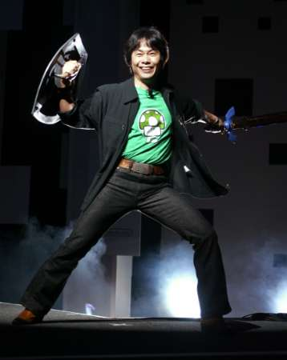
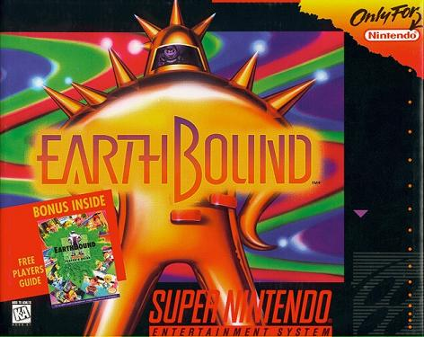
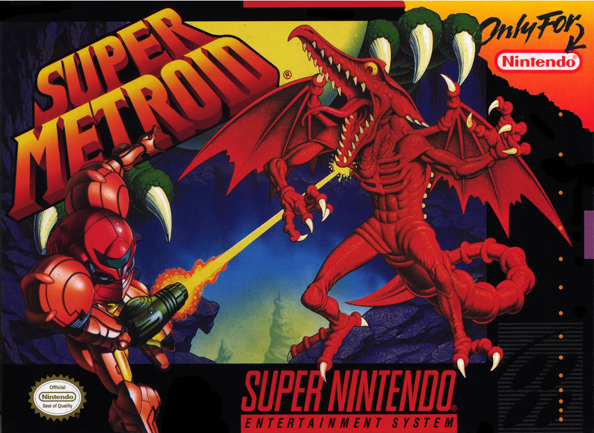

An unofficial wiki site dedicated to both the history and founders of Nintendo. Updated regularly for accuracy. Open source editing is very much welcome.
Latest Article
Shigeru Miyamoto was born November 16 1952 and is arguably the muscle behind Nintendo’s fame.
Top Contributors
Jordan Watkins
Wordan Jatkins
Watkinsjo2
Featured Article
This quirky RPG series was given form by Shigesato Itoi in 1989 for the NES. Mother is loved for it's whimsical dialogue, cherish able music, parodies of video games, and numerous pop culture references.
Although not as popular as other Nintendo all-stars, the Metroid franchise still manages to impress with its fine-tuned adventure game play and non linear exploration...